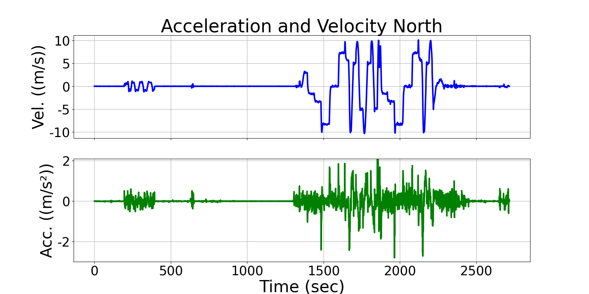
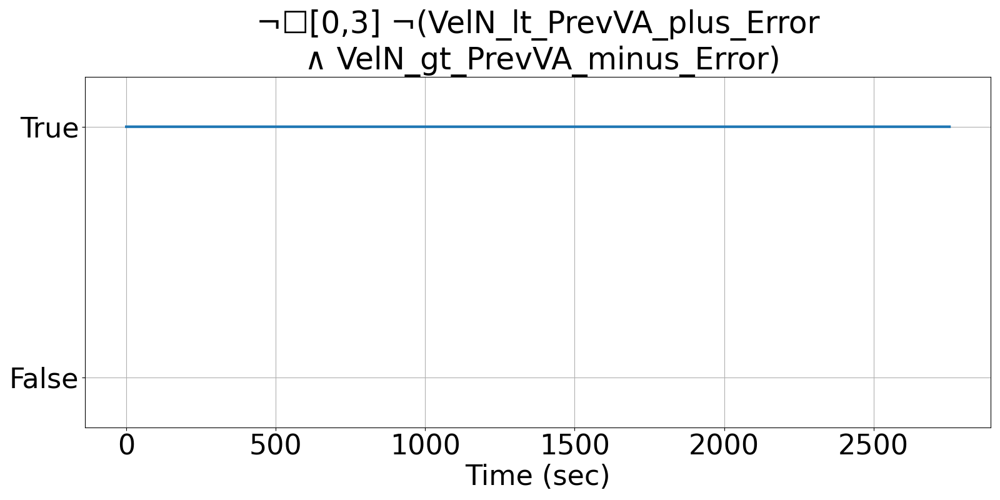
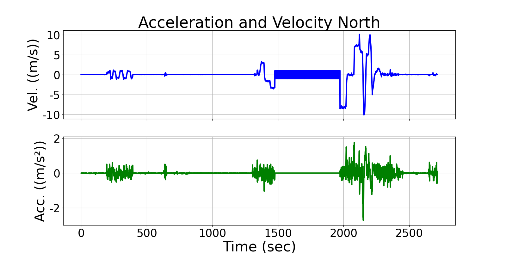
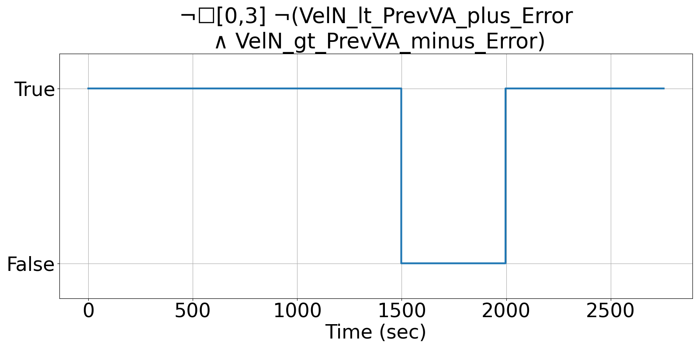

Integrating Runtime Verification into an
Automated UAS Traffic Management System
Matthew Cauwels, Abigail Hammer, Benjamin Hertz, Phillip H. Jones, Kristin Y. Rozier
This webpage contains supplementary specifications for "Integrating Runtime Verification into an
Automated UAS Traffic Management System" by M. Cauwels, A. Hammer, B. Hertz, P. H. Jones, and K. Y. Rozier
IS_UAS_2
Specification Description
The northern velocity measurement difference from the GPS and the IMU should be less than ERROR_VEL.
Signals Required
VelN (GPS), AccN (IMU)
Boolean Conversion of Signals to Atomic Inputs
VelN_lt_PrevVA_plus_Error: VelN < PREV_VelN + PREV_AccN + ERROR_VEL
VelN_gt_PrevVA_minus_Error: VelN > PREV_VelN +PREV_AccN - ERROR_VELMLTL Specification
¬☐[0,3] ¬(VelN_lt_PrevVA_plus_Error ∧ VelN_gt_PrevVA_minus_Error)
Fault Explanation
The error of the northern velocity between the GPS and the IMU is out of bounds.
Additional Notes
Acceleration component is multiplied by change in time, but for the Vapor dt=1
Figures



